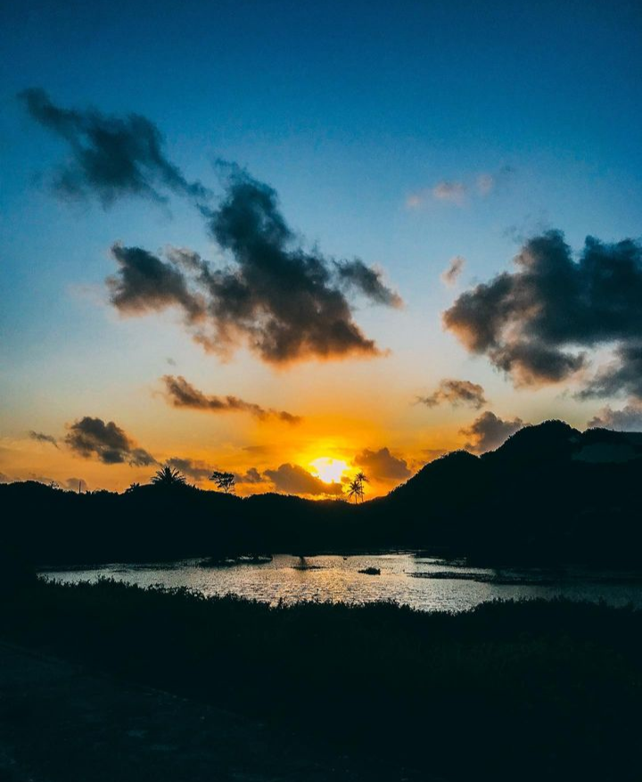

Fotografia Básica Descrição: O IFCE Campus Maranguape assumiu a iniciativa de ofertar à comunidade local,
o curso extensão de Fotografia Básica, na modalidade presencial, com carga horária de
40 horas destinando 20 vagas para os egressos do ensino fundamental. O referido projeto visa
introduzir o público em geral aos conceitos básicos de fotografia. Com o avanço da tecnologia
a fotografia analógica perdeu muito espaço para a digital, tornando esta prática bem mais
corrente, mesmo para os não profissionais. Com o advento dos smartphones a fotografia passou
para um novo patamar, especialmente devido à intensificação das redes sociais.
Todavia, o mercado continua exigindo profissionais qualificados nesta área,
e possui um comportamento crescente dentro das mídias sociais.
Situação: Em andamento; Natureza: Extensão.
2013 - 2014
Uso Eficiente de Energia na UFERSA Descrição: O objetivo principal do presente projeto é avaliar as condições gerais
da infra-estrutura da Universidade Federal Rural do Semi-Árido - UFERSA,
desenvolvendo o conhecimento da gestão de energia elétrica e conseqüentemente a economia de energia,
como também disseminar os conceitos do uso racional e eficiente de energia na comunidade Ufersiana.
Situação: Concluído; Natureza: Extensão.
